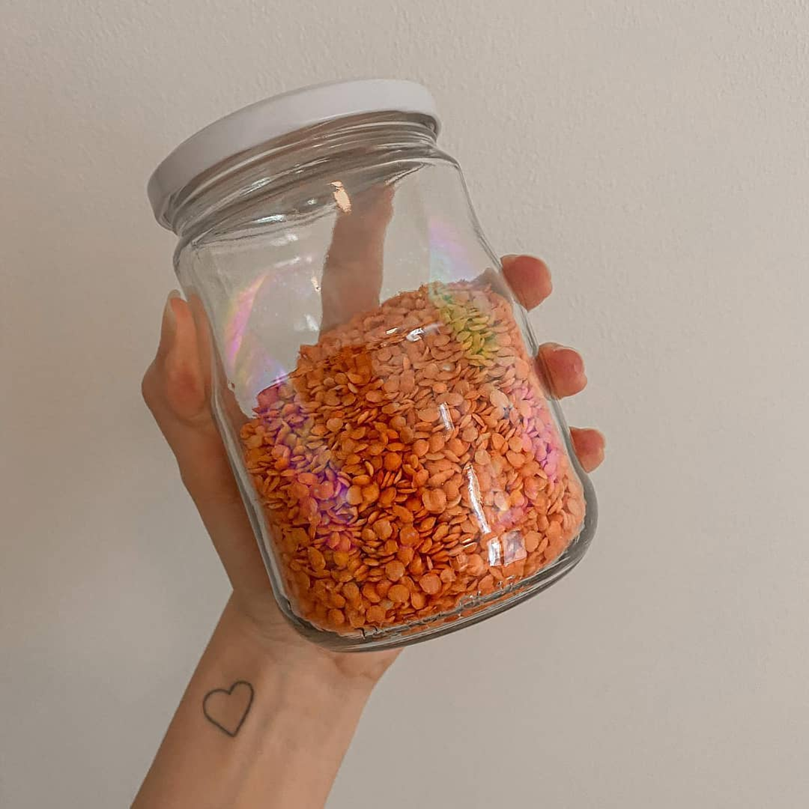

🌱 English in the comment 🌱
Strukoviny sú mojou voľbou skoro stále. Aj keď ich nejem úplne každý deň tak na týždennej báze sa mi rôzne z nich v jedálničku objavujú. Teraz som si veľmi obľúbila dhal z tejto červenej šošovice. Recept nájdete už aj na blogu. Okrem dhalu však milujem rôzne privarky a polievky zo šošovice a fazule. Hummus z cizrny a z tej aj rôzne fašírky. A potom moje experimenty kedy si strukoviny v rôznych formách pridávam či už do Budha misiek alebo cestovín a všetkého ďalšieho. A samozrejme ryžu s fazuľou 🥰 top!
Je jasné, že ja strukoviny (luštěniny) milujem. A čo vy? Čo si z nich najradšej pripravujete a ktorá je vaša najobľúbenejšia?
#vegan #dhal #whatveganseat #strukoviny #lusteniny #veganstvi #veganfoodshare #lentils #beans #dnesjemvegan #veganemvpraze #prag #cervenasosovica #cocka #rostlinne #veganer #rostlinnastrava #veganstvo #rastlinne #crueltyfree #bezobalu #veganbloger #nutritarian #starchsolution #letfoodbethymedicine #foodlover ##plantbased